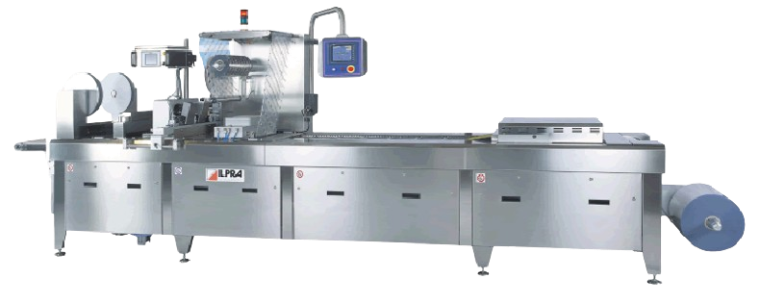
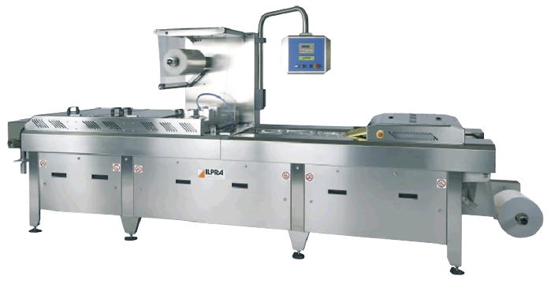

Vaakumrada-pakkimisliin
Suurtootjale
ILPRA FORMPACK F5
ILPRA Formpack F5 mudel on in-line radapakkimisliin suure tootlikkuse rahuldamiseks tööstustes. Tänu mehaanilisele ülekandele on masina liikumised kiired ja täpsed võimaldades töökiirust kuni 15 tsüklit minutis vaakumi ja gaasiga! Suruõhuvaba süsteem vähendab ka tootmiskulusid kuna puudub vajadus võimsa kompressori järele. Innovaatiline disain ja kõrge ohutusklass IP65 tagavad probleemideta töö märjas keskkonnas. Kõrge töökindlus ja madalad kasutuskulud tagavad tootmise efektiivsuse.

Masina omadused:
Võimalik töötada pehme ja jäiga pakendiga.
Palju lisaseadmeid ja versioone
Ülikiire vormivahetus ilma poltideta
Suur puutetundlik eestikeelne juhtpaneel kõikide töösõlmede visualiseeritud juhtimisega ekraanilt
Harjadeta mootor tagab täpsuse ja suure kiiruse
Määrdevaba mehanism
ILPRA FORMPACK F3
ILPRA Formpack F3 mudel on in-line radapakkimisliin suure tootlikkuse rahuldamiseks tööstustes. Tänu mehaanilisele ülekandele on masina liikumised kiired ja täpsed võimaldades töökiirust kuni 15 tsüklit minutis vaakumi ja gaasiga! Suruõhuvaba süsteem vähendab ka tootmiskulusid kuna puudub vajadus võimsa kompressori järele. Innovaatiline disain ja kõrge ohutusklass IP65 tagavad probleemideta töö märjas keskkonnas. Kõrge töökindlus ja madalad kasutuskulud tagavad tootmise efektiivsuse.

Masina omadused:
Võimalik töötada pehme ja jäiga pakendiga.
Palju lisaseadmeid ja versioone
Ülikiire vormivahetus ilma poltideta
Suur puutetundlik eestikeelne juhtpaneel kõikide töösõlmede visualiseeritud juhtimisega ekraanilt
Harjadeta mootor tagab täpsuse ja suure kiiruse
Määrdevaba mehanism
Rohkem infot: ILPRA FORMPACK F3